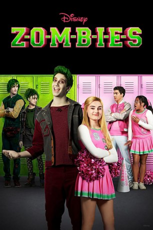

#8991 Zombies - Das Musical
Alternativ: Z-O-M-B-I-E-S
 
 IMDB-Wertung: 6.4 / 10
IMDB-Wertung: 6.4 / 10  Metascore: 0
Metascore: 0 
Im Musical Zombies besuchen Cheerleader und Zombies die gleiche Highschool in Seabrook. Seabrook ist eine Stadt, die sehr viel Wert auf Traditionen, Angepasstheit, Fußball und Cheerleading legt. Aber das Ganze wird gehörig auf den Kopf gestellt, als sich die Nachricht verbreitet, dass Schüler aus Zombietown in die Seabrook Highschool gehen sollen. Und natürlich verläuft die Verschmelzung beider Schulen nicht ohne Komplikationen. Als dann die Cheerleaderin Addison (Meg Donnelly) Freundschaft mit dem Fußballstar der Zombies, Zed (Milo Manheim), schließt, machen sie gemeinsame Sache, um ihre Schule und die Gemeinde wieder zu vereinen.
Jahr: 2018
Dauer: 89 Minuten
FSK:
Land: USA Studio: Disney ChannelTonspuren: DD2.0 - ,
Untertitel:
Auflösung: 1080p (1920x1080) Größe: 4597 MB
Genre: Liebe, Musical
Regisseur: Paul Hoen
Drehbuch: David Light
Soundtrack: George S. Clinton
Darsteller:
- Meg Donnelly als Addison
- Milo Manheim als Zed
- Trevor Tordjman als Bucky
- Emilia McCarthy als Lacey
- James Godfrey als Bonzo
- Kylee Russell als Eliza
- Kingston Foster als Zoey
- Naomi Snieckus als Ms. Lee
- Serena Evans als Seabrook Dancer
- Mickeey Nguyen als Tracey
- Marie Ward als Missy
- Jasmine Renée Thomas als Stacey
 Kim Roberts als Eliza's Mom
Kim Roberts als Eliza's Mom Tony Nappo als Zevon
Tony Nappo als Zevon- Paul Hopkins als Dale
- Ramona Milano als Cheer Announcer
- Miles Faber als Zombie Dancer
- Jason Boyd als Zombie Patrol Guard
- Bianca Melchior als Zombie Dancer
 Russell Yuen als Cheer Announcer
Russell Yuen als Cheer Announcer- Nathan Espejo als Zombie Dancer 10
- Michael Brown als Officer Gus
- Rong Fu als Cheer Fan #1
- Robert Bazzocchi als Seabrook Dancer
- Courtney Van Wirdum als Seabrook Dancer
- Alex McCooeye als Mr. Zeck
- Kara Wooten als Zombie Patrol Guard
- Jhaleil Swaby als Seabrook Lineman
- Jake Teel als Seabrook Cheerleader #7
- Ofilio Portillo als Classic Zombie
- Josh Matos als Seabrook Cheerleader #10
- Carla Jeffery als Bree
- Laura Thorne als Heckler
- Tanya Karn als Seabrook & Zombie Dancer
- Kristopher Grzella als Seabrook Dancer #6 & Zombie Dancer #11
- Kaanchana Kerr als Seabrook Cheerleader #8
- Jordan Letlow als Seabrook Dancer
- Zachary Burke als Dancer
- Jade Whitney als Dancer
- Mandy Keating als Dancer
- Cassandra Caccioppoli als Dancer
- Anthony Put als Dancer
- Christina de la Cruz als Dancer
- Karina Grzella als Seabrook Dancer #4
- Dwayne Gulston als Dancer
- Amanda-May Wilson als Dancer
- Malcolm Messado Fletcher als Zombie dancer
- Michael Scheitzbach als Dancer
- Ethan Sharer als Dancer
- Emily Anne Dupere als Lemonade Stand Operator
Datei: X:\2018(N-Z)\Zombies - Das Musical (2018, FSK, 1920x1080).mkv seit 16.05.2018
Festplatte: HD 2018(G-Z)-2019(A-Z)
 Es gibt insgesamt 172 Filme in der Gruppe '2018(N-Z)'
Es gibt insgesamt 172 Filme in der Gruppe '2018(N-Z)'